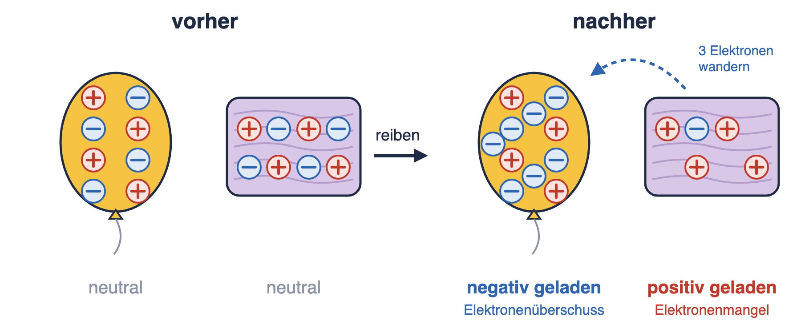
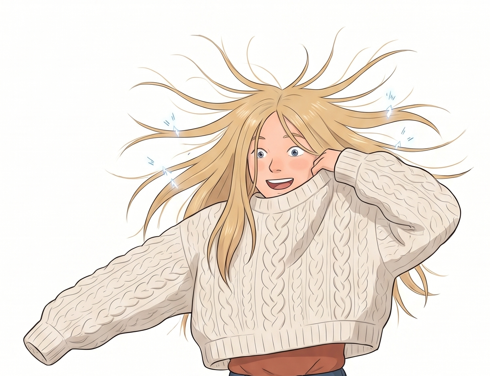
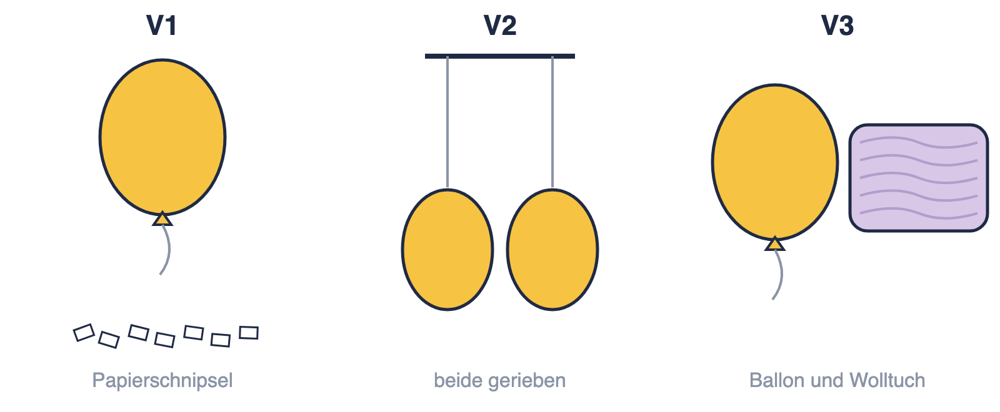
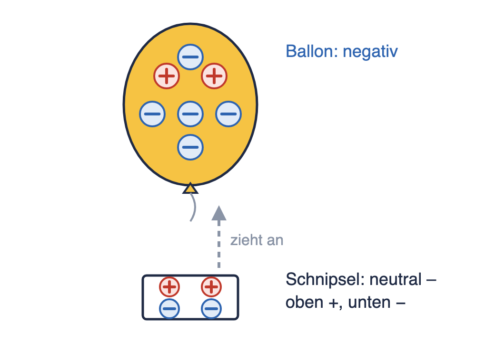
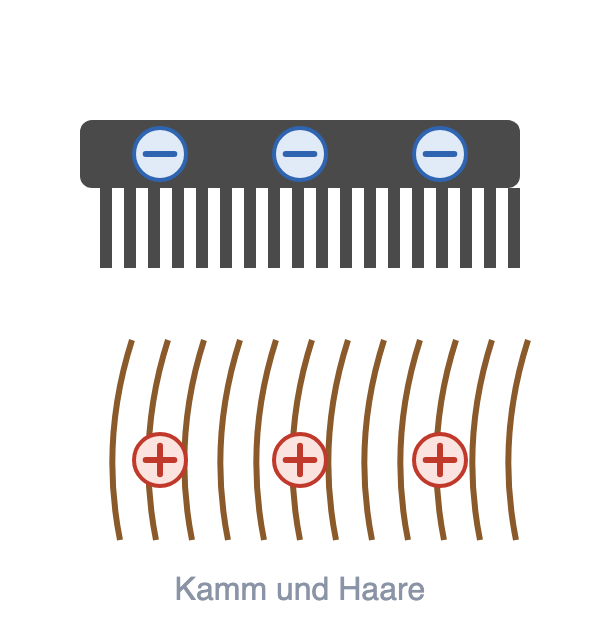
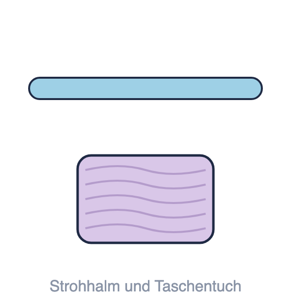
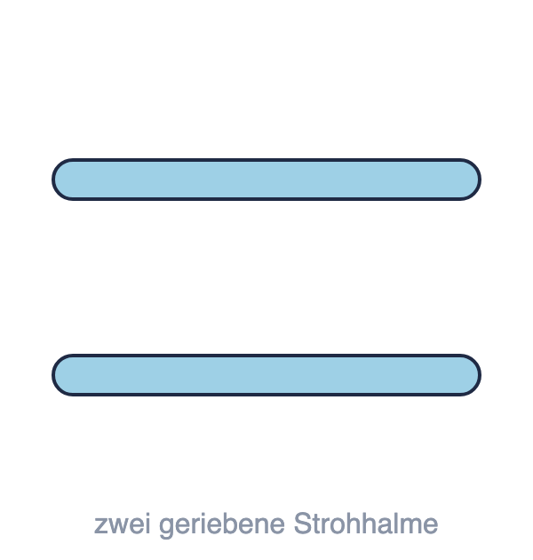
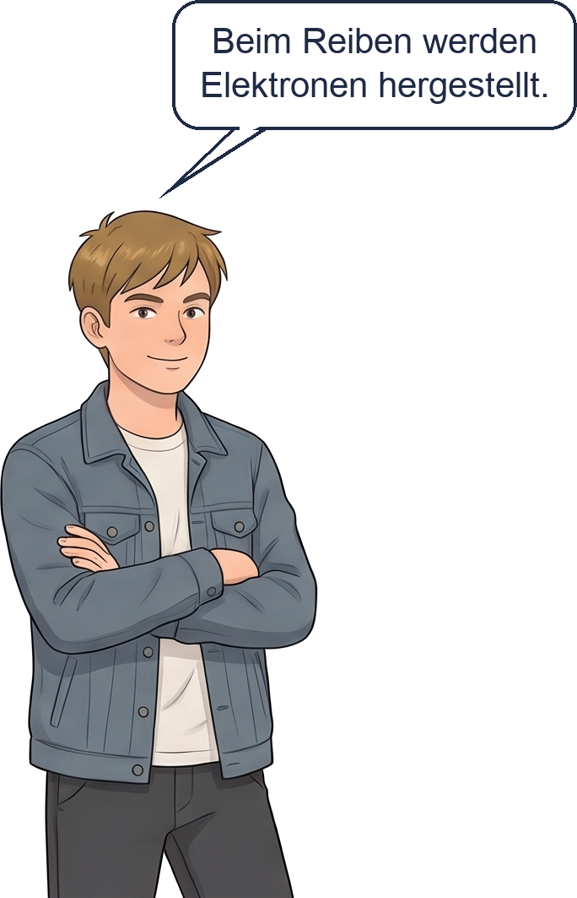

Wo sind wir? A Ladung und Stromkreis · B Stromstärke und Spannung · C Schaltungen · D Widerstand · E Energie und Kosten · F Wirkungen und Gefahren
Das Wichtigste 1. Jeder Körper enthält positive (+) und negative (−) Ladungen. Die negativen Ladungen heißen _________________. Nur sie können wandern.
2. Beim Reiben werden Elektronen von einem Körper auf den anderen _________________. Es entstehen keine neuen Elektronen. 3. Gleiche Ladungen ____________ sich ab. Ungleiche Ladungen ____________ sich an. 4. Auch ein neutraler Körper wird angezogen: Seine Ladungen ___________________ sich ein wenig. Das heißt Influenz.  Grenze des Bildes: + und − sind Zeichen auf dem Papier. Ladungen selbst kann man nicht sehen – nur, was sie bewirken. |

KI-Bild
Emma zieht ihren Wollpulli über den Kopf. Dabei knistert es, manchmal blitzt es sogar ein bisschen. Ihre Haare stehen ab und kleben am Pulli.
✎ allein · ankreuzen · bevor ihr es ausprobiert
Ein Luftballon wird an einem Wolltuch gerieben. Was passiert dann?
| Vorhersage | |
| Ballon über Papierschnipseln | ☐ zieht an ☐ nichts ☐ stößt ab |
| zwei geriebene Ballons nebeneinander | ☐ ziehen sich an ☐ nichts ☐ stoßen sich ab |
| geriebener Ballon und das Wolltuch | ☐ ziehen sich an ☐ nichts ☐ stoßen sich ab |
Weil …
________________________________________________
________________________________________________
✎ zu zweit · ins Skript · Material: Kiste Elektrizität (2 Luftballons, Wolltuch, Papierschnipsel)
V1 Reibe einen Ballon 10-mal kräftig am Wolltuch. Halte ihn knapp über die Papierschnipsel.
V2 Reibt beide Ballons. Einer hält die Fäden, sodass die Ballons nebeneinander hängen.
V3 Reibe einen Ballon. Nähere ihn langsam dem Wolltuch, mit dem du gerieben hast.

Das beobachte ich
| Beobachtung | |
| V1 Ballon und Schnipsel | ☐ ziehen sich an ☐ nichts ☐ stoßen sich ab |
| V2 Ballon und Ballon | ☐ ziehen sich an ☐ nichts ☐ stoßen sich ab |
| V3 Ballon und Wolltuch | ☐ ziehen sich an ☐ nichts ☐ stoßen sich ab |
Stimmt deine Vorhersage? ☐ ja ☐ teilweise ☐ nein
Nach dem Versuch: Ballons zur Seite legen. Deine Lehrkraft erklärt, was dabei mit den Elektronen passiert.
V3: Beim Reiben wandern Elektronen vom Tuch auf den Ballon. Der Ballon ist dann ______________ geladen, das Tuch ______________ geladen. Ungleiche Ladungen ____________ sich an.
V2: Beide Ballons sind ______________ geladen. Gleiche Ladungen ____________ sich ab.
V1: Die Schnipsel sind neutral. Der negative Ballon drückt ihre Elektronen ein Stück weg, nach unten. Oben hat der Schnipsel dann mehr positive Ladung – und wird angezogen. Das ist die Influenz. |  |
In der Simulation siehst du die Elektronen wandern: Simulation: Luftballons →
Beim Ausziehen reiben Pulli und Haare aneinander. Dabei wandern Elektronen von den Haaren auf den Pulli.
Die Haare sind ______________ geladen, der Pulli ist ______________ geladen.
Die Haare stehen ab, weil alle Haare ____________ geladen sind und sich ______________.
Die Haare kleben am Pulli, weil _______________________________________________.
Es knistert, weil Elektronen als winziger __________ zurückspringen.
✎ allein · mit dem Stift ins Bild
Zeichne + und − ein und kreuze an. Bild 1 ist schon vorgemacht.
 ★ 1 Der Kamm nimmt Elektronen von den Haaren auf. ☐ ziehen sich an |  2 Der Strohhalm nimmt Elektronen vom Taschentuch auf. ☐ ziehen sich an |  3 Beide Strohhalme wurden am Taschentuch gerieben. ☐ ziehen sich an |
 | Paul hat ☐ recht ☐ nicht recht, weil … Hilfe: Checkliste und Satzanfänge → ________________________________ ________________________________ ________________________________ ________________________________ ________________________________
|
✎ allein · zwei Sätze
Warum knistert der Pulli und klebt der Luftballon? Benutze die Wörter Elektronen, übertragen, geladen, anziehen.
Hilfe: Checkliste und Satzanfänge →
________________________________________________
________________________________________________
________________________________________________
________________________________________________
________________________________________________
Ausblick: Beim Knistern springen Elektronen nur einmal kurz über. Was passiert, wenn Elektronen dauerhaft fließen? → nächste Stunde.
Neue Wörter
|
Nächste Stunde beginnen wir mit der Aufgabe mit Material auf der nächsten Seite (Gewitter).